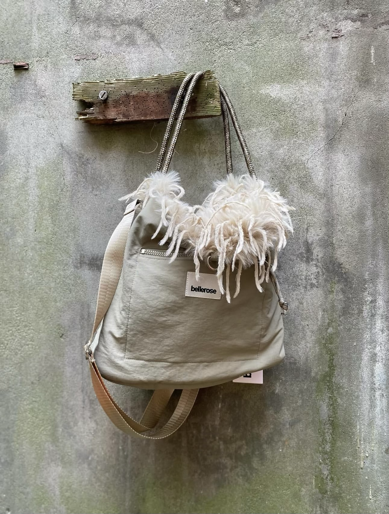
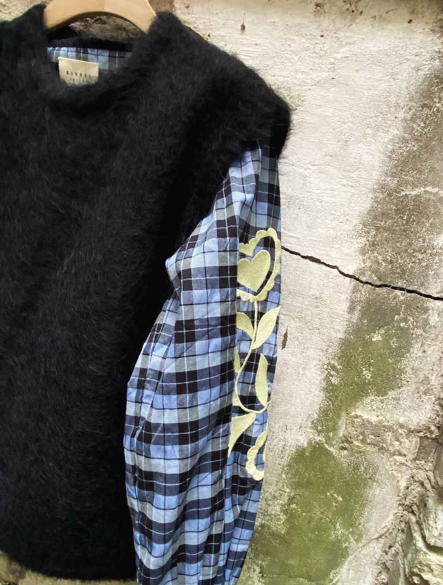
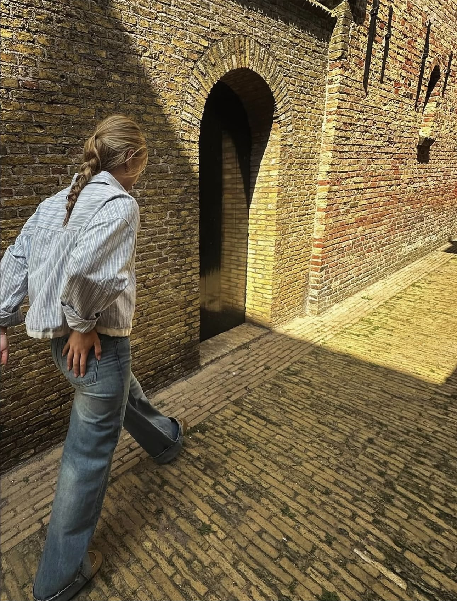
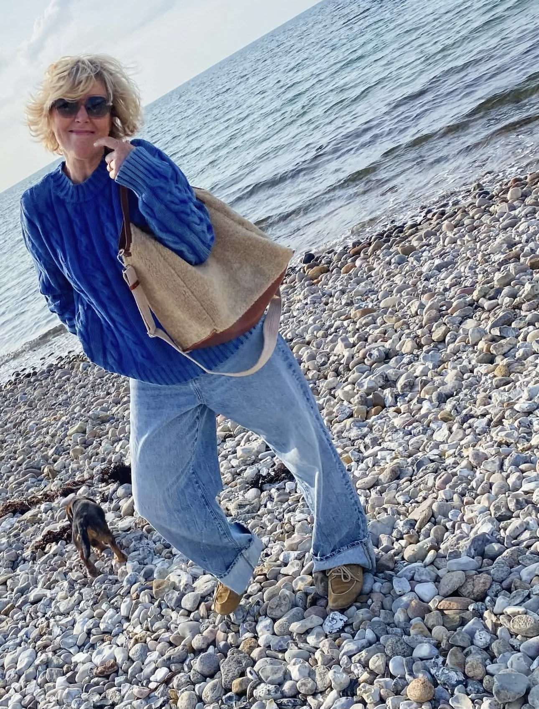
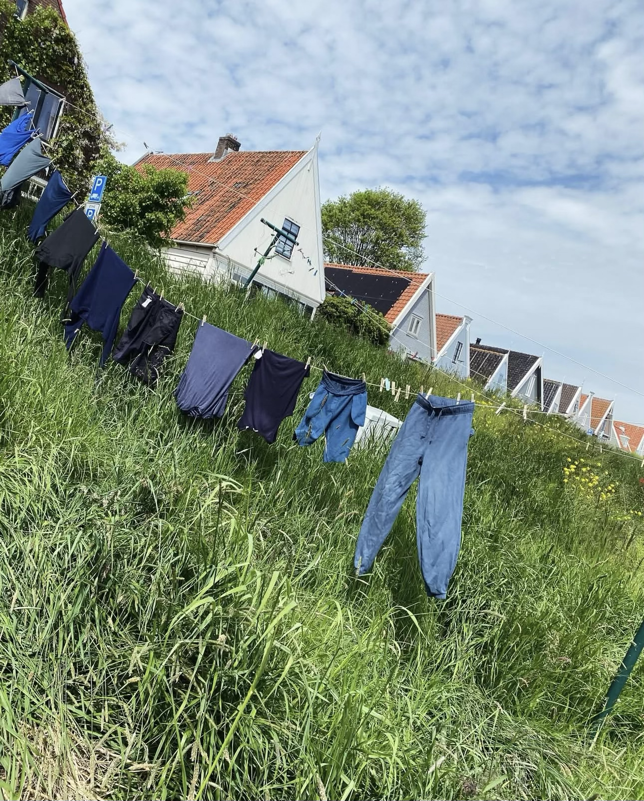

<section style="padding: 80px 40px; background: transparent;">

  <div style="margin-bottom: 48px;">
    <h2 style="
      font-family: 'Josefin Sans', sans-serif;
      font-size: clamp(28px, 4vw, 48px);
      font-weight: 200;
      letter-spacing: 4px;
      text-transform: uppercase;
      color: var(--black);
      margin-bottom: 12px;
    ">Lookbook</h2>
    <p style="
      font-family: 'Cormorant Garamond', serif;
      font-size: 18px;
      font-weight: 300;
      color: var(--muted);
      letter-spacing: 1px;
    ">Sfeer, stijl en het gevoel van MOJ.</p>
  </div>

  <div style="
    display: grid;
    grid-template-columns: repeat(3, 1fr);
    grid-template-rows: auto;
    gap: 10px;
  ">

    <!-- Grote foto links bovenaan — 2 rijen hoog -->
    <div style="grid-column: 1; grid-row: 1 / 3;">
      
    </div>

    <!-- Rechts bovenaan -->
    <div style="grid-column: 2; grid-row: 1;">
      
    </div>

    <!-- Rechts van midden bovenaan -->
    <div style="grid-column: 3; grid-row: 1;">
      
    </div>

    <!-- Midden rij 2 -->
    <div style="grid-column: 2; grid-row: 2;">
      
    </div>

    <!-- Rechts rij 2 -->
    <div style="grid-column: 3; grid-row: 2;">
      
    </div>

    <!-- Rij 3 — drie even grote foto's -->
    <div style="grid-column: 1; grid-row: 3;">
      
    </div>

    <div style="grid-column: 2; grid-row: 3;">
      
    </div>

    <div style="grid-column: 3; grid-row: 3;">
      
    </div>

    <!-- Rij 4 — twee brede foto's -->
    <div style="grid-column: 1 / 3; grid-row: 4;">
      
    </div>

    <div style="grid-column: 3; grid-row: 4;">
      
    </div>

  </div>

</section>